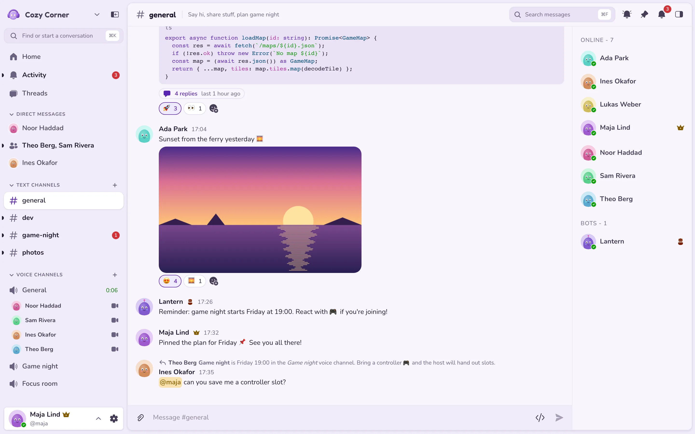
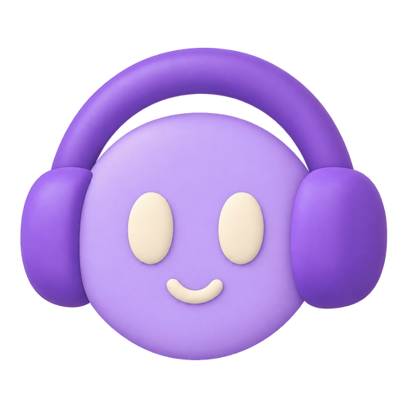
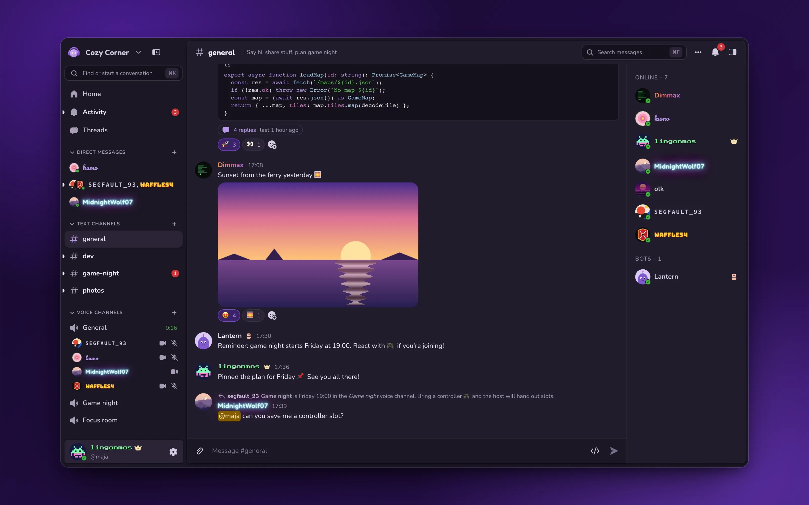
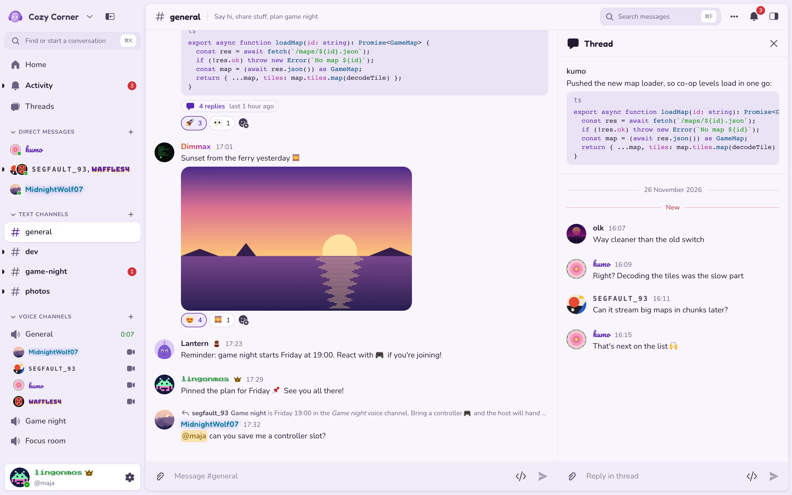
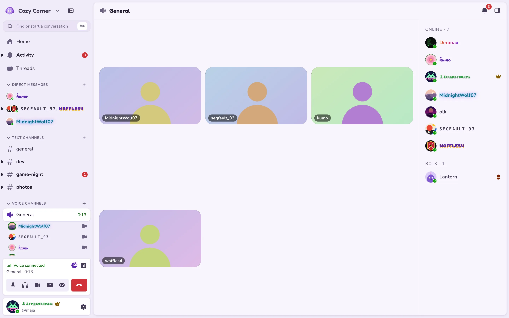
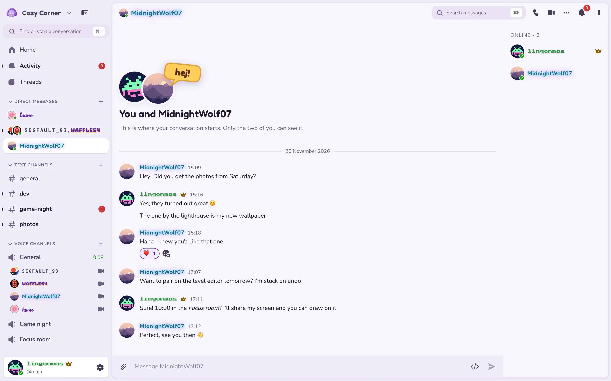

Channels that feel alive
Markdown, code blocks, pictures and video, reactions, replies, pins and link previews. Search finds old messages, and unread and mention badges show where to look.


BabblaBabbla is chat and voice for your friends, your guild or your team, on a server you run yourself. Talk in channels, jump into voice, share your screen and draw on it, or hand out controllers and play together.
For macOS, Windows and Linux. Or open your server in any browser.

Markdown, code blocks, pictures and video, reactions, replies, pins and link previews. Search finds old messages, and unread and mention badges show where to look.

Take a side conversation into a thread without losing the main one. Thread replies notify the people in it.

Drop into a voice channel with push to talk, cameras and per-person volume. Share your screen and let friends draw on it: in the desktop app you see their strokes right on top of your screen.

Talk one to one or start a group with a few friends. Calls ring in the app, and mentions, replies and DMs land in your inbox.

A Babbla server is one community: you own it and the data in it. It runs with Docker, next to LiveKit for voice and video, and serves the web app too, so people can join from a browser without installing anything.
The desktop app is for macOS, Windows and Linux, and updates itself.
The macOS app is not signed yet. After moving it to Applications, run
xattr -cr /Applications/Babbla.app once, or allow it in System Settings >
Privacy & Security. Windows may show SmartScreen the first time: choose More info >
Run anyway.